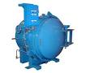
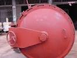
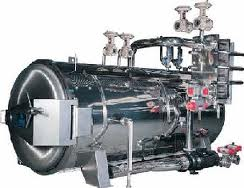

My sign and ladder idea was in context to his redesign; I know exactly how it was in the original. Whatever way he decides to go with this, I know that it will be great, and WAY better than I could ever hope to do.
My next update’s focus will center around making things make sense. The version of C2A5H shown on video had too much of a focus placed on being close to the original, which also made no sense. I want to make places make sense. I think I can make a compromise.
The drop down into the “watery” area at the beginning of the Satchel Pipe scene will now be from a broken pipe which runs along the roof. Makes more sense. A pipe running along a rooftop makes sense, and I’ll connect it to the next building. It’ll also allow me to expand the roof a little.
I will leave the water tank mostly as it is (except maybe a few aesthetic touch ups) as a water tank connected to some pipes near a furnace doesn’t seem far fetched to me.
This is probably what I will do to the pipe from Satchel Pipe scene. This makes at least a little bit of sense without changing the scene too much. There has been many suggestions to make the end of the satpipe by the marine be a destroyed pipe. That would make sense. If you ignore the fact that by putting a satchel into an open pipe and setting it off, the inferno will come out both ends and the marine will cook himself alive. There has to be a door there for it to make any kind of sense. It was there in the version I displayed, it was just the scene’s timing was off so you couldn’t see it well. I have significantly tightened up the timing since then.
The furnace room puzzle will definitely be overhauled, as to what to do with the room’s layout I am not quite sure yet. I have several ideas but nothing concrete. I quite like the idea of you having to climb into the furnace and through the pipe that’s connected to it (hence why you have to turn it off). Though this will be tricky to illustrate to the player.
My other idea is to have it so that the player uses the 2 valves (of 3, one is turned off by default) to turn off the gas and shut off the fires in the furnace. There is a box of satchel charges nearby (how else would the satpipe guy have got his, eh?). The player puts one in the furnace, and shuts the doors. You turn on all 3 valves (no fire this time, as you’ve already put it out). Then set off the satchel and blow up the furnace (which is now full of gas), opening up a hole to another pipe which you can climb through. This seems like a very nice idea to me, but all this will be very difficult to illustrate to the player, which is a major downside.
I’m not sure what to do yet. All I know is that I will overhaul it.
But I hope even after change the furnace room will still have hecu vs headcrab fight, right ?
No, it will be replaced by the grunts fighting the furnace, which has come alive and is demanding sacrifices to fuel its fiery rage.
Make it happen, TextFAMGUY1.
To compromise between what you guys want and what HECU Marine wants, I will make it an evil furnace which has been possessed by a headcrab, feeding off the corpses of the HECU to fuel its fiery zombie desires.
How’s that?
In all seriousness though, yes that encounter will still be there. You seem very concerned about it, HECU Marine!
on your idea for blowing the furnace, placing a few danger high explosive signs around the furnace should be enough. most players can put 2 and 2 together. r
This might not be the best idea for the satchel scene layout because it makes it counter-intuitive how the explosion becomes directed toward you with such force…unless the top path is created as a result of the explosion.
I agree with you, the end of the satpipe has to be closeable in order for the marine to survive so a door must be in place. A plausible door design is an autoclave door (see images). For those who don’t know, autoclaves are designed to sterilize objects placed in them at high temperatures and pressures. The door must be screwed closed by turning a wheel to create an exceptionally tight fit…otherwise the door would explode open during a heating cycle. This design element would work well on the marine side of the sat pipe. After he throws the satchel, have him close the door but wait a couple of seconds before he detonates. That will create the impression that he’s locking the door tight so he doesn’t blow himself up. The autoclave-like design of the door also makes sense because a tight fit is needed to keep the water on Gordon’s end from flooding into the building.
What is this water tank you speak of…I don’t see it in the video. Is it the “watery” area?
These are both nice ideas, but as you mentioned, very hard to execute. You can’t just have a sign on the furnace that says “Blow me up”…I mean who would do that? Perhaps have the other pipe you can climb through be already partially broken (and accessable after the furnace explosion) and have a map near it showing the building layout with the pipe leading to the gasworks. A sign on top of the furnace saying “Keep flammable objects away” might be good reverse psychology for the player.



Hehe glad it’s still in  I am really crazy about that part because… you know about what I told earlier. Hecu being overhelmed by … whatever.
I am really crazy about that part because… you know about what I told earlier. Hecu being overhelmed by … whatever.
Ok So here is another missing scene from LAMBDA CORE
I always thought it was a bit scary this scene and I really missed it
https://www.youtube.com/watch?v=H5ZIdLzvXHQ&feature=youtu.be
I put it together today… I guess it was originally intended to be in the game but got cut for some reason because the prop for the doors was made but the animations did not work proper on the Alien Grunt anyway found a way around it and restored the scene back into the map.
I need to check that the map works properly and nothing went wrong in the decompile process but when I have done this I will share it here for you to add into BMS
Did it scare you?
Happy Halloween anyway
This must be returned into the game! You must let the devs know! I wonder if they even read these threads…sometimes it’s like talking to a wall.
Exactly why I did it… It simply cannot be left out this one it’s too iconic.
I have to seal the blastdoor off (as it’s not solid) with some sort of invisible geometry via trigger and test the map out for any decompile brush or other errors once that’s done I will upload the map with the missing scene inserted
there are a few more to come but not many this is 1 of 3 missing scenes and I plan to do some simple effects updates too
Higher Res Version of previous video here
https://www.youtube.com/watch?v=3mB6euS09xo&feature=youtu.be
Just watched the new video - excellent work! And those Xenian flora screens look brilliant, it adds a whole new feel to the invasion. I think the jump pad looks a lot better than the ladder and does make a certain amount of sense - it looks convenient because it was presumably put there by the Xenians to provide access to the roof; perhaps it was dropped by a manta through the ceiling. Maybe you could put a Xenian or two on top to make its purpose more clear?
In regards to making sure things trigger when the player can see them, couldn’t you just use a trigger_look? And for making the sachel/furnace puzzle more clear to the player, maybe put a sign saying “KEEP EXPLOSIVE MATERIAL AWAY FROM FURNACE”.
Furthermore, if possible, perhaps swap the manta/harrier sequence in C2A5H with the one in the previous map. That way, you first see the harrier chasing mantas, then in the next map you see what could be the same one being chased and crashing, which goes along with the aliens overwhelming the HECU theme.
One more thing, perhaps keep a bit of the escorting of the guard, but not throughout the whole map, just say a room/corridor or two with nothing more than zombies or a vort in the way. It just seems a bit convenient that he’s holed up right next to the button that unlocks all the doors.
THINGS YOU CAN DO TO MAKE C2A5H BETTER:
-
In the pipe room, instead of making the pipe’s corners jagged, make them round, so they look more realistic.
-
In the security booth where the guard lets you into the garg parking garage, clutter it up more. Add security camera screens, things on walls, throw in a computer.
-
Label some of the ungo-able rooms by putting something like “maintenance”. Don’t just put pointless rooms in unless those rooms have something to do with the backbone of the facility. i.e. Control rooms for the pipes, private offices, etc.
-
This may be outrageous, but expand the bathrooms. Not only the one you use to go to the roof, but also the one you go in beforehand when you use the bouncer. Put stuff on walls, add safety signs.
-
You seem to be on fixing the lighting, that’s great.
-
Label things, whether they be outside, or inside. You need to know what they do.
That’s about it. I hoped I have supplied some useful feedback.
Interesting idea.
I just realized a problem with the furnace puzzle. Text’s idea was to shut off the fire by turning off the gas valves, then throw a satchel in, turn on the gas, then detonate the satchel and destroy the furnace to create an entrance to a pipe. If you think about it, this actually makes no sense. Why can’t you just throw a satchel into the burning furnace? The satchel will explode and the gas feeding the fire would just propagate the explosion such that it would destroy the pipe anyway. There’s no need to shut off the gas and turn it back on.
Maybe crawling into the furnace to access the feeding vent is a better idea. However, the feeding vent would need to be low as ladders don’t exist in furnaces.
Hey man, that’s actually really well done. Great job! I look forward to adding it to my next playthrough of BM sometime in the next few months (which will also hopefully consist of my FINISHED maps!). It looks a little bit fast though, like too fast for him to be forcing them open - but if you could find a way to slow it down a little it’d be perfect. Though I’m pretty sure you can’t do that.
Thank you for your kind words. I will address your criticisms one by one.
The bathrooms with the Xen jump pads is going to be redesigned - I will likely make it very destroyed. It seems to convenient at the moment to me, and it breaks immersion by making the player pause to wonder how and why a Xenian Jump Pad has appeared right by where he needs to go. I don’t like that. The ladder did the same thing really, but that was just sitting there because I had no idea what to do for it. So I don’t know really.
The trigger_look thing, it still doesn’t work. I’m most likely going to have it so the open area that exists in my video where you look out onto the battle, will initially be closed off, and then gets destroyed via script after x number of seconds, showing the player the battle - with ambient noise being played beforehand to show there’s a battle going on. I’d like to give the player a chance to explore the area around the Alien Grunt, but I can’t do that if that area’s open, even with trigger_look. It’s too unbelievable.
I don’t want to swap the two sequences around. I don’t think C2A5H’s sequence would work as well on C2A5G as the area is far less open. The Mantas/Harriers don’t necessarily exist to show the HECU getting whooped, it’s more a portrayal of a very big war going on. The HECU getting whooped you can already see on the ground.
I’m not too sure about the guard. It doesn’t seem unreasonable to me that he’s hiding in the main security office - isn’t that where you’d expect to find a guard? If the area is under lockdown protocol and he’s waiting for Gordon Freeman to show (as his choreography suggests), I don’t see what’s so far fetched about it. Sure, it’s a tad convenient, but I’m not too sure it stretches plausibility beyond reasonable bounds. I just hate escort quests, and this one is particularly unclear. Having him unlock it there and then, is both a simpler and more elegant solution I think. Though I’m open to suggestion if others think so too.
Making the pipe joins round using the Torus tool was an absolute horror and generated invalid brushes. It’s an awful awful aspect of Hammer - it hates brush based things, especially when the brushwork gets complicated. Unless someone can do it for me, I’m going to leave the pipes jagged as they are. If you know how to make a 64X64 90 degree junction with 2 unit thick walls, PLEASE PLEASE let me know, as I’d love to be able to use something like that. But as far as I know, the brushes just get too small. Hammer makes them invalid.
The security office where you meet Barney was by far the most unfinished aspect of the map. It will be far more detailed in later releases.
Again, your mention of labeling unreachable rooms is something that will be addressed in later, more detailed releases.
Thank you for your feedback. All the finer details which you’ve mentioned I am planning to do on later releases however. Don’t worry, I’m a massive perfectionist. Though the maps showcased in my videos are far from perfect, first release will be as close to it as I think is possible.
I’m not sure you’re right about my gas puzzle, I did have a think about it. If the fire’s already burning in the furnace it’s using up most of the gas. All the satchel will do is burn up the excess gas, which shouldn’t be much as the fire’s using it. If you fill up the furnace without a fire it gets absolutely full of gas, making an explosion happen upon a spark. I think. Is this ridiculous? I’m not sure, it seemed alright to me! My biggest problem with that idea personally is that it would be quite unclear to the player as to what they’d have to do.
Otherwise, I will probably just make it you have to crawl through a pipe found in the furnace.
It still seems kind of strange to me though I’d probably need to see a crude demonstration to make a final judgement. But let’s say we used the idea. After turning off the gas and extinguishing the flames, turning on the gas should not “fill” the furnace with enough gas to generate a huge explosion. Remember, you have to have the furnace door open to put a satchel in so gas will leak out.
Also, if this puzzle were implemented, you would also have to program for incorrect player choices. Some players will throw the satchel into the fire before the flames are extinguished. Should this satchel still manually detonate or automatically explode (I favor the latter)? If this satchel explodes, will it create a minor explosion that would contrast with the major explosion that happens when the player gets it right?
As to getting the player to solve the puzzle if you decide to implement it, that should be relatively easy. As another poster and myself have mentioned, slap a sign on the furnace and use some reverse psychology on the player (e.g. no flammable materials, keep flammable materials away, no explosives). Make the access pipe that is opened after the explosion already partially destroyed as a visual cue to the players and add a map that shows that the pipe leads to the gasworks.
Ultimately, you’re going to sacrifice a little realism in exchange for the puzzle, but if you do this correctly it might be rather satisfying and worth it.
if you use a explosive for that puzzle keep this in mind the player would have to close the doors on the furnace or else it would more than likely just burn out.

Enjoy a very crude image that shows a potential idea that extends the building portion, giving a nice large-ish Xen-habitat area, as well as the entire corner of the building being blown out, instead of just a small hole. Then the jump pad can go anywhere in the general corner area to get you to the roof.
Oh my god ! Stop telling him to polish his maps. Let him do it his way. I want to play these maps soon because I don’t want to replay the game until I have these maps. How long will it take you to finish maps so I can play them ? Did you started C2A5I already or are you still “polishing” previous maps ?